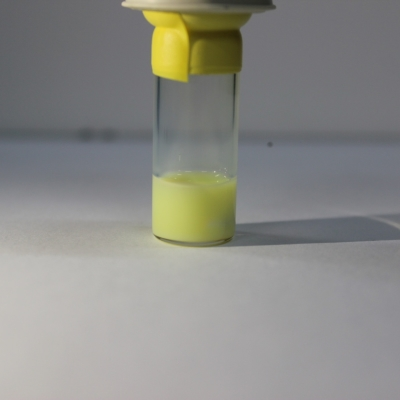
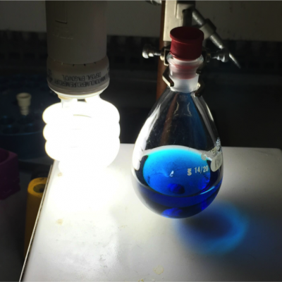
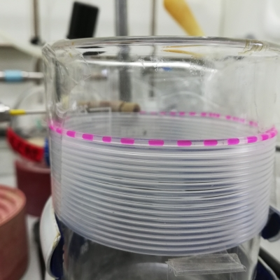
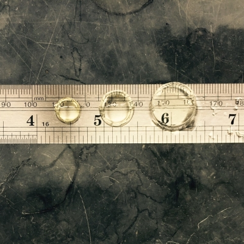
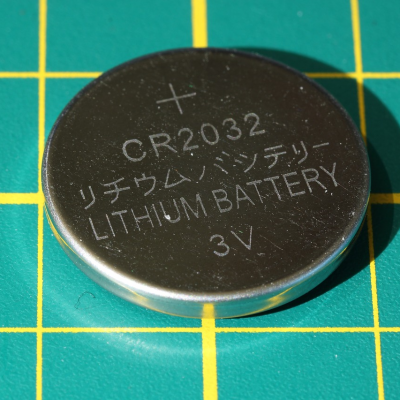
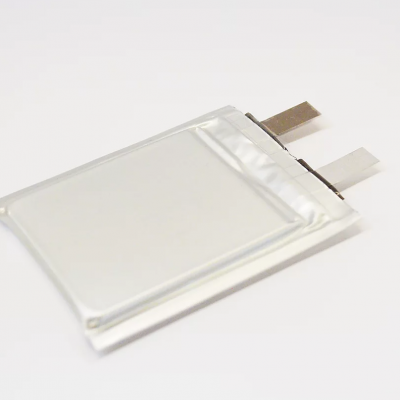

Overview
- Develop synthetic methodology of new high-performance materials through the design, preparation and characterization of polymer and small molecular materials;
- Build lithium batteries, supercapacitors and flexible devices based on solid-state electrolytes;
- Use modern analysis and characterization techniques to elucidate the structure-performance relationship and ion transport mechanism at the molecular level.
Materials Synthesis 有机能源材料合成与创制



- Polymers 聚合物
- Porous organic materials 有机多孔材料
- Fluorinated molecules 含氟分子
Energy Storage and Conversion 聚合物基固态电池与新能源应用



- Solid polymer electrolytes 聚合物电解质
- All-solid-state batteries 固态电池
- Lithium metal batteries 锂金属电池
- Solid-state supercapacitors and beyond batteries 固态超级电容器与超锂电化学储能